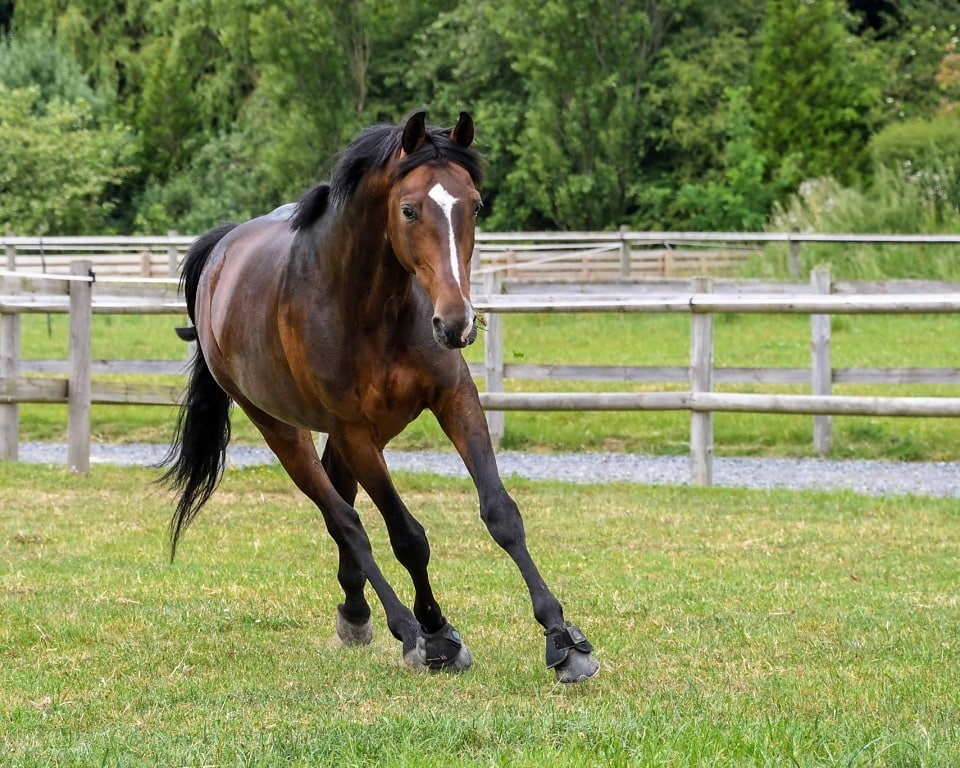
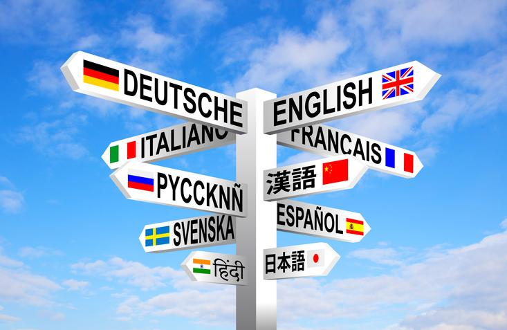
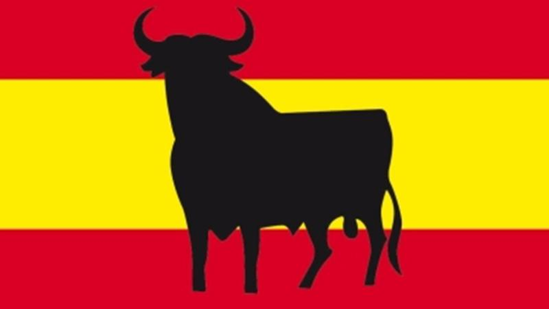

Moje koníčky
Už od malička jsem měla plno koníčků, chodila jsem na tance, hrála jsem na flétnu a dokonce jsem i jezdila na koních. Kromě mě toho jsem chodila na tance, hrála jsem na flétnu a dokonce jsem i jezdila na koních. Zajímám se také o sebeobranu a trénuji krav magu. Dlouhodobě se učím několik cizích jazyků: němčinu, polštinu, španělštinu, francouzštinu a angličtinu. Díky tomu mám široký okruh zájmů, kterým se věnuji ve volném čase.


